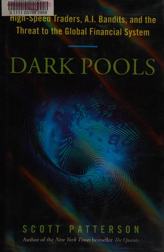

斯科特·帕特森（Scott Patterson）是《华尔街日报》记者，报道方向是华盛顿的金融监管；他的上一本书《宽客》（The Quants，2010）已是畅销书。《暗池》2012年6月由 Crown Business 出版，比迈克尔·刘易斯那本让高频交易家喻户晓的《快闪大对决》（Flash Boys，2014）早了整整两年——刘易斯本人也为《暗池》写了推荐语。
书名"暗池"指的是不公开挂单的私人交易场所，但全书真正讲的是美国股市如何一步步被机器接管。故事的核心人物是程序员乔希·莱文（Josh Levine）——一个理想主义的技术天才，他相信应该让散户绕开中间商直接交易，于是围绕券商 Datek 打造了电子交易网络"岛屿"（Island ECN）。到1990年代末，Island 一度处理了纳斯达克约十分之一的成交量。帕特森从那批钻纳斯达克小额订单系统空子的"SOES 强盗"式早期日内交易者写起，讲到监管层用"全国市场系统规则"（Reg NMS）重塑市场结构，反而催生了交易场所的碎片化和高频交易的爆发。书里另一位关键人物是海姆·博德克（Haim Bodek）——他创办的高频公司 Trading Machines 陷入困境后，他发现交易所专门设计的某些订单类型暗中偏袒高频交易商，屏幕上大量的流动性其实是"假的"，于是把证据带到美国证监会，引发了对 BATS、Direct Edge 等交易所的调查。全书以2010年5月6日的"闪电崩盘"收尾：道琼斯指数在几分钟内暴跌近千点又迅速反弹，成为机器主导下市场之脆弱的最佳注脚。
马克·库班（达拉斯独行侠队老板、企业家）的评价一针见血："这是没人谈论、却最重要的金融问题——高频交易商如何操纵了市场。"（The most important financial issue no one talks about—how high-frequency traders have rigged the market.）迈克尔·刘易斯称本书是"一部关于早期电子交易者的出色历史"（An excellent history of the early electronic traders）。《黑天鹅》作者纳西姆·塔勒布则说："斯科特·帕特森有一种能力，能看见你我注意不到的东西。"《财富》杂志认为它"极其好读又通俗……是迄今关于股票交易新世界最引人入胜的记述"。
对今天的读者而言，《暗池》回答的是一个仍然要紧的问题：当买卖股票的对手方越来越多是运行在毫秒尺度上的算法，"市场"到底还意味着什么？帕特森没有把技术进步简单描绘成一场阴谋——莱文最初的动机是打破华尔街的垄断、让普通人受益，可同一套技术演化到极致，又制造了普通人看不见也看不懂的新的不公。本书简体中文版《暗池》由机械工业出版社于2015年出版（孙豪、王泽宪、李骥宇译）。